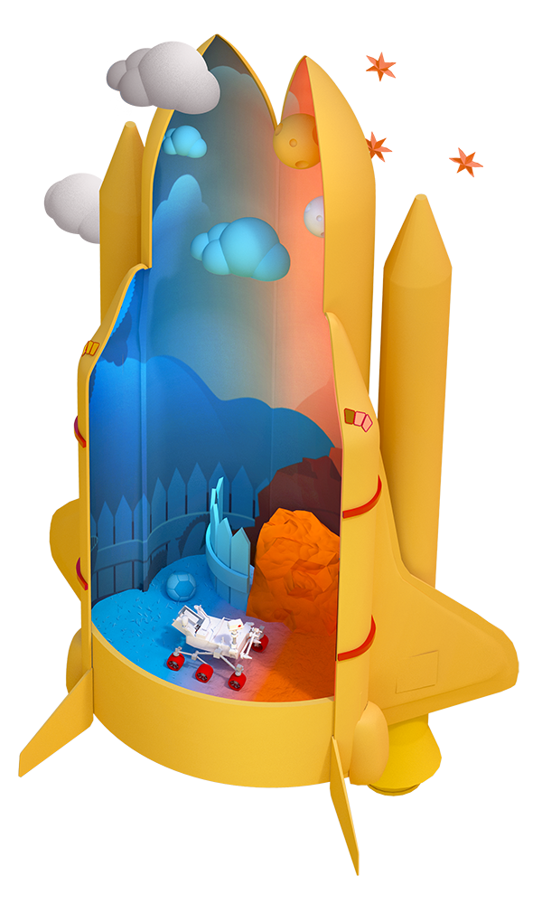

The best and brightest took us to the moon with the computing power of pocket calculators. Now they're taking us farther—and they're doing it with the tech we've been talking about all season. Open source is taking us to Mars.
The Season 2 finale takes us to NASA's Jet Propulsion Laboratory (JPL). Tom Soderstrom shares how much JPL has gained by embracing open source. Hila Lifshitz-Assaf explains that NASA is solving some of their greatest problems with open software and crowdsourcing. And Dan Wachspress describes how working with NASA means proprietary companies need to make some sacrifices—but they get to work on the most innovative projects in the world.
The explorers of the final frontier are choosing to work in the open—and Mars is their destination. What's next?
00:12 - Saron Yitbarek
On August 6, 2012, a car-size rover called Curiosity fell from the top of the Martian atmosphere to the planet's surface. The fall took seven minutes. Down, down. The rover carried a precious cargo, 500,000 lines of code, 76 pyrotechnic devices, and a series of tools for conducting never-before-possible experiments. After releasing a supersonic parachute, after heat shield separation, after power descent, and even a sky crane deployment in mid-air, Curiosity at last touched down.
00:59 - NASA engineers
Time to see where Curiosity will take us.
01:13 -Saron Yitbarek
Hear that sound? That's what it sounds like when a room full of engineers land a rover on Mars. In a few days, they'll be getting a congrats phone call from President Barack Obama. But for now it's all about the team. A room full of people who know they've just accomplished something together that they could never have accomplished on their own.
01:39 - Saron Yitbarek
I'm Saron Yitbarek, and this is Command Line Heroes, an original podcast from Red Hat. All season long, we've seen how open source technology remakes the way we work and what we're capable of accomplishing. The through-line for me has always been community. It's always about discovering better ways to work together, better ways to learn from the pros, while listening to fresh voices, too. Better ways to connect.
02:11 - Saron Yitbarek
For our season two finale, we're holding on to all those lessons, while we discover how open source powers some of our grandest projects. You might've been watching last November when NASA's InSight Lander touched down on the surface of Mars. Hugs all around. Well, it turns out that shooting for the stars or the red planet only works when you bet everything on collaboration.
02:45 - Saron Yitbarek
Did I mention that rover on Mars has its own Twitter account? Four million followers. No big deal. And it recently tweeted a message to earthlings, an invitation to build a rover of their own, complete with open source instructions and code, courtesy of NASA's Jet Propulsion Lab. We caught up with some folks called the SGVHAK Group. They're one of the first to build their own rover.
03:13 - SGVHAK Group
I'm gonna try and drive over that curb.
03:15 - SGVHAK Group
Let's see what she can do.
03:15 - SGVHAK Group
Going up. Nope.
03:15 - SGVHAK Group
No.
03:20 - SGVHAK Group
She used to be able to go over pretty easily, but with the changes we've made to the wheels, she's a little reluctant now.
03:27 - Saron Yitbarek
The group includes Roger Cheng, Dave Flynn, Emily Velasco, and Lan Dang.
03:34 - SGVHAK Group
Dave designs all the mechanical stuff, and I guess I put things together. Roger's our software guy, Dave's design, Lan is our fearless leader, so.
03:45 - SGVHAK Group
You are the one, you're the mechanical fabrication expert on the team.
03:49 - SGVHAK Group
I guess. I guess so.
03:51 - SGVHAK Group
Tell people about the serval bracket.
03:53 - SGVHAK Group
Oh right.
03:54 - SGVHAK Group
You're the one that built the servo cluge that, run it, the show.
03:58 - SGVHAK Group
We were gonna take-
04:00 - Saron Yitbarek
Building one of these rovers isn't exactly a Lego project. It takes actual rocket scientists about 200 hours to complete. So yeah, let's give these guys a few minutes to get their act together. We'll check in with them later.
04:19 - Saron Yitbarek
Meanwhile, I wanted to learn more about why NASA gave the world an open source rover in the first place. And I found just the person to ask.
04:29 - Tom Soderstrom
My name is Tom Soderstrom. I am chief technology and innovation officer for IT at NASA's Jet Propulsion Laboratory.
04:37 - Saron Yitbarek
JPL is a group of about 6,000 people. It's NASA's federally-funded research center, and they focus on robotic exploration in space.
04:48 - Tom Soderstrom
We look for is there life out there? How did the universe originate, where is it going? And in addition to that, should we ever need to export humanity, we're trying to find Earth 2.0. The earth-like planets that one day we could inhabit.
05:33 - Saron Yitbarek
Yeah, it's the big leagues. But here's the thing. Tom's team isn't some siloed group of engineers. They're deeply committed to connecting with the next generation of scientists. They're constantly trying to find new ways to spark original thinking. In fact, it's a crucial part of their job. The open source rover project gives away those designs, so teams of non-NASA folk can try building their own rover. That was part of NASA's larger strategy to promote innovation. Tom and I got talking about why open sourcing NASA's work is so important. Starting naturally with that open source rover.
05:46 - Saron Yitbarek
A lot of people are, but when I found this site, I'm like, oh man, maybe I can make a rover. It's really exciting. It's really engaging.
05:55 - Tom Soderstrom
We built it for the public and schools to learn, and we're realizing that as we did, it's becoming a wonderful experimentation platform for us. So as we try new things, it's the best place to try it, very easy, very quick, and then we can put it on the real rovers. So we're hoping that people will incorporate things like solar panels, accelerometers, the science payloads, very advanced artificial intelligence programming, and we just want the experiences to proliferate and the people get interested in this and eventually interested in space. Because space is way cool.
06:32 - Saron Yitbarek
So besides the ideas that you have listed, things that people can do, what have people done with it that you were really excited about or impressed by?
06:42 - Tom Soderstrom
The price reduction was one really impressive thing and right now, there's a lot of artificial intelligence (AI) going on. So that's one of the most interesting things I see coming. I would love to see somebody add a robot arm to it.
06:55 - Saron Yitbarek
Really cool.
06:55 - Tom Soderstrom
And something we're thinking about.
06:58 - Saron Yitbarek
So it sounds like this project is open on all angles, right? I mean the hardware is a list of parts that are suggested and it sounds like you can use your own thing, make it cheaper, make it more expensive also, I guess if you wanted to. The software is completely open. Is there any part of this that isn't open?
07:17 - Tom Soderstrom
No, it's all completely open.
07:19 - Saron Yitbarek
So what's really amazing about this is if you told me that high school students could build their own rovers, that would just sound too difficult, you know, that sounds so advanced. It sounds like something that only NASA would do. Right? How simple is it really to put together?
07:36 - Tom Soderstrom
So it's not meant to be a toy. It's meant to be something real, that really gives them the real experience. So several schools in California have already adopted it, to put it into their science and engineering and programming program. Something called Mechatronics, for instance, where it combines all of them. And that makes us very happy, because then we will get better trained people coming into NASA at one point.
08:04 - Saron Yitbarek
But it sounds like at this point it's not only benefiting these future NASA people, these future scientists, but it's also benefiting you. Tell me a little bit more about that.
08:14 - Tom Soderstrom
So all of a sudden, we have now a very simple platform to experiment with. So I can envision the open source rover driving around JPL and saying hello to people. So we can experiment very quickly in our own backyard on things that we would later on need to take to much more difficult places. So, it becomes a mobile platform that we can experiment with. And again, I think AI is going to be the interesting one, because it's exploding so quickly, and the simplicity of adding new robotics parts to it is another factor.
08:50 - Saron Yitbarek
So, theoretically you could have created your own mobile playground, a place to experiment and not made it open source, right? It could have just been like an internal thing. How has the fact that it's been open source affected what you've been able to learn?
09:08 - Tom Soderstrom
So, that's a really good question. Why open source? For us, it was more difficult to make it open source, but that's kind of the challenge. So we wanted to make it open source so that other schools and all that could adopt it and build it. It created a lot more work to create a manual that other people could use who are not already robotics experts. But the bottom line is, I think when we release something into open source, it's cleaner, it's tighter, it's better-documented, because people know other people are going to reuse this, and it has to be built to be extended. So the quality is higher. I talked to Netflix, and they had found the same thing, that the code, once it was released open source, was cleaner. It was better.
09:54 - Saron Yitbarek
When you think about these open source rovers, 5-, 10-, maybe even 20-plus years from now, how do you see the things that they're able to do and what people have been able to create? How do you see that possibly benefiting us here on earth?
10:11 - Tom Soderstrom
In many, many ways. So, today this rover is built to roll. I can see that it could be built to walk. It could be extended to hop. We're already sending a helicopter to Mars, it's flying right now. So these rovers are not just rovers of today. Having people worldwide experiment with it can help us move much, much faster to see what's possible, and come up with ideas that frankly we might not have thought of. So what will it look like? I can't wait to see. I don't know.
10:49 - Saron Yitbarek
By creating this platform, you've kind of enabled and empowered a lot of people to make a lot of toys, and then we'll see what turns up.
10:57 - Tom Soderstrom
Yes, and that's actually a very strong point, because what I have noticed is if I can even think of something, somebody is already doing it. It's a matter of finding them, and whatever we came up with to start, once the end users get their hands on it, they're gonna improve it tenfold, in ways that we never even imagined. So giving them toys to play with makes for a much stronger and better place with more advanced missions in the future.
11:23 - Saron Yitbarek
Beautiful.
11:29 - Saron Yitbarek
f you feel like getting in on the open source rover mission, you can find out how at opensourcerover.jpl.nasa.gov. There is so much fun to be had there. We'll return for more with Tom Soderstrom. But first, I want us to dig a bit deeper into NASA's relationship with open source.
11:51 - Hila Lifshitz-Assaf
Hi, I'm Hila Lifshitz-Assaf. I'm a professor at Stern School of Business, NYU.
11:57 - Saron Yitbarek
Hila's been studying how NASA breaks down knowledge barriers.
12:02 - Hila Lifshitz-Assaf
If you go back, even to 15th century, and you think about lone inventors, likeLeonardo da Vinci and others, they were kind of connected only in their local communities. And then, we had the industrial revolution and the birth of the lab. And ever since, for 200 years or more, people have been working in their labs. And the big change that's happened in the 21st century with the digital revolution that we're experiencing has brought up things like open source, which are debunking the need for those organizational boundaries that we had.
12:34 - Saron Yitbarek
In NASA's work, Hila sees a prime example of that massive change.
12:39 - Hila Lifshitz-Assaf
One of the things that attracted me about NASA was that they were the bravest in the sense that they really took strategic research and development (R&D) challenges, that their scientists and engineers and top brains were working at the same time and opened them to the crowd. And I have to say that still to today, many other organizations, when they do open source science or crowdsourcing, they do not take their core strategic challenges. They take something that is on the side, that doesn't risk their organization too much, whether it succeeds or fails, and NASA did something that really changed things, once it succeeded.
13:14 - Saron Yitbarek
Starting back in 2009, NASA began using open innovation platforms, like Innocentive and Topcoder. And they weren't playing around. Like Hila mentioned, they were putting their top R &D challenges on those platforms.
13:29 - Hila Lifshitz-Assaf
It didn't even took a full year to see solutions starting to come from crowdsourcing platforms.
13:34 - Saron Yitbarek
Real quick, I want to give you just one of the home runs they got from opening up their research. Hila's gonna describe how they were able to level-up their solar flare prediction.
13:46 - Hila Lifshitz-Assaf
So, predicting solar storms is a hard heliophysics problem that people have been working on it for more than a decade. And basically they formulated it in a way that was able to be solved by a wide area of people. And they were very intentional about it. That's the amazing thing that I found that they were trying to get solutions from people outside of heliophysics. They were really looking for an innovative solution. And indeed, Bruce Kragan, a semi-retired radio engineer from rural New Hampshire, in 3 months brought us solutions that predicted solar flares. And when the NASA folks ran it, they actually saw that he predicted at 80%. So basically, something that in the traditional model will take years and millions of dollars happened in 3 months in something around $30,000 to $40,000, $50,000.
14:36 - Saron Yitbarek
You might have already guessed, this kind of change required some culture shifts over at NASA.
14:44 - Hila Lifshitz-Assaf
So, some of them invited those external solvers to come to their organizations, other created internships or collaboration, all types of interesting ways to bring that knowledge in, and not to keep it kind of buffered.
14:59 - Saron Yitbarek
There's something kind of beautiful there when you think about it. A lot of organizations still resist open source development and don't like giving up proprietary software, but here you've got the most innovative, biggest-picture group of scientists on the planet, and they're saying, yeah, you know what? Let's do this together. That's a powerful thing.
15:22 - Hila Lifshitz-Assaf
We've seen that revolution is software . We have not yet fully seen it in science and technology, and I think it is prime time to go through it. The more we see the rise of computational physics, computational biology, the more this will become possible. I think much more of the population can participate and help in different type of tasks, and maybe this way, science technology can really make progress beyond developing a new app.
15:53 - Saron Yitbarek
Hila Lifshitz-Assaf is a professor at the Stern School of business at NYU.
16:00 - Saron Yitbarek
NASA benefits massively from opening up their research challenges, but another way they build community is via the Small Business Innovation Grant program, which supports innovative work in the private sector. All those blue sky projects that are risky but might pay off big time.
16:22 - Dan Wachspress
Hi, my name is Dan Wachspress. I'm an aeronautical engineer working at Continuum Dynamics Incorporated.
16:28 - Saron Yitbarek
Dan's company, CDI, does R&D related to the rotorcraft industry. So that's helicopters, gyrocopters—anything that uses wings or blades to fly, literally blue sky. They've been working with NASA researching vertical takeoff. Think Jetson-style air taxis.
16:50 - Dan Wachspress
The whole idea is, once you have electric motors instead of gas turbine engines on your vehicles, you can have many more propulsors. They could be much quieter, safer, and all issues with helicopters that annoy people could go away, and we might have a world where you call up a taxi that takes you from Dallas to Fort Worth, let's say, in an electric-powered air taxi with 4 other passengers and no pilot, as opposed to getting in a car and trying to battle through the traffic. That's the vision.
17:22 - Saron Yitbarek
A lot of companies, including Uber, are very interested in the potential of air taxis. And the great thing about NASA's role here is that it breaks down barriers that would exist if each of those companies were slogging through the research on their own.
17:38 - Dan Wachspress
Companies do not want to divulge information necessarily. They want to keep trade secrets, and they won't share knowledge . NASA's goal is to put as much knowledge and have as much capability as possible out there in their hands. And I think if you talk to any of these companies, they'll agree that they're just, they wouldn't be able to do what they're doing as fast as they're doing if they weren't supported by NASA and the technology NASA is pushing on today and has pushed on in the past.
18:13 - Saron Yitbarek
I'm guessing it doesn't hurt that NASA has already got some pretty killer wind tunnels, too. From Mars Rovers to flying cars, are you getting a certain vibe here? We're talking about innovation, where the sky is not even the limit. And it's all because of the planet-sized collaboration that the open source mindset makes possible.
18:41 - Saron Yitbarek
I promise we'd come back to NASA's Tom Soderstrom. Tom figures that all the open source magic we've been exploring for the past 2 seasons is building up into a massive shift point that he calls the Fourth Industrial Revolution.
18:59 - Tom Soderstrom
When you look at how innovation happens, it's really about technology waves. And there's a lot of technology waves that are coming right now, and they're all building to a giant tsunami. They're coming faster and faster, and they're all going to change everything, so that's why we call it the Fourth Industrial Revolution.
19:21 - Saron Yitbarek
I'm just going to break down what's in those waves super fast, even though each one of them could be an episode in itself. When Tom talks about those waves that are hitting us, he's talking about things like cybersecurity challenges at scale, quantum computing, and software-defined everything. But wait, there's more. He's also talking about ubiquitous computing, natural interfaces, and the internet of things.
19:49 - Tom Soderstrom
These all build to the giant tsunami, which is built-in intelligence everywhere.
19:54 - Saron Yitbarek
When you imagine this tsunami, this moment when it all comes together and creates something bigger than its individual parts, what does that look like?
20:04 - Tom Soderstrom
I think it's not gonna be like one day somebody stands up and says, look at this. I am now announcing built-in intelligence everywhere. It's creeping into everything that we do. We say smart, right? The smart TV, a smart conference room. That's really where we will start realizing that it's becoming smarter and smarter and smarter, and for the enterprise it means you can just ask a question by speaking to the room and it searches through petabytes of data in thousands of different data sources and gets you the answer. So it's natural language processing. It's deep learning, it's machine learning, and we're not gonna say all of a sudden, wow we're here. It's just going keep morphing and getting better and better.
20:49 - Saron Yitbarek
Thinking about this Fourth Industrial Revolution , how does that influence the way you do work at the Jet PropulsionLab?
20:57 - Tom Soderstrom
I think the experimentation, this next industrial revolution is really helping us experiment quicker and to take advantage of much better components, both software and hardware, that perhaps we don't have to build all of it, but we can just be more intelligent about using it. And then open source. Open source is really what's changing a lot of how we work and what we do.
21:23 - Saron Yitbarek
How so? Tell me more about that.
21:24 - Tom Soderstrom
I think the open source, I'm old enough to have gone through the open source wars, where the open source was a toy. It was bad, it was inferior to commercial. All of that has kind of gone away, at least at JPL. Now it's what's most appropriate for the problem at hand. It's more economical. It's much faster to experiment. Another one is in open sources, we don't have to develop everything ourselves anymore. We can develop it, and then if we can release it open source, we can get help to make it better. And then it helps us retain and attract talent. This one is interesting.
22:05 - Saron Yitbarek
Oh, that is interesting.
22:07 - Tom Soderstrom
I think people, the new generation especially, get their street creds from submitting to open source and getting as many stars as possible. So that's what you'll see on the resume. My software got x stars.
22:21 - Saron Yitbarek
What's really interesting about how much open source has affected and helped the work that you're doing is the fact that open source isn't new, right? You mentioned yourself that you've lived through the open source wars. You've seen it progress over the years. What is it about open source today that allows you to really take advantage of it in a way that maybe you couldn't 10, 15, 20 years ago?
22:47 - Tom Soderstrom
There's a couple. One of them is simply cloud computing. We don't have to do the big bet and buy a bunch of software and own it for many years. We can just experiment. So that's been a big one. The other one is the realization that open source is no less secure than commercial source. It's no longer, forgive the expression, a religious argument. It's just more of an economical and practical discussion.
23:15 - Saron Yitbarek
Open source has clearly played a big part in what you all are doing, especially when you think about the future of JPL and what you hope to accomplish moving forward. It sounds like open source will probably continue to be a big part of that story. When you think about the most exciting or the most ideal outcome of that collaboration, that participation, what might that look like and what do you think it will mean for humankind?
23:42 - Tom Soderstrom
That's a great question. I think that the real answer is you just said it, humankind. It's getting everybody more involved in what we do. You know, one day we're going to put humans on Mars. We're going to explore even further to find Earth 2.0. We're going to put humans on the moon again. All of that will require a lot more involvement from the world.
24:15 - Saron Yitbarek
I'm into that revolution. Tom Soderstrom is the chief technology and innovation officer for IT at NASA's Jet Propulsion Laboratory.
24:29 - Saron Yitbarek
From Earth 2.0, back to Earth 1.0. It's time to remember the humble origins of that Fourth Industrial Revolution. As grand as open source projects can get, it all starts with a group of hackers just trying to make their rover work.
24:47 - SGVHAK Group
So we're gonna see if it'll run. We're gonna, we put down another thing to help it get over the curb. It made it. Yay.
24:59 - Saron Yitbarek
Yay.
25:02 - SGVHAK Group
Uh-oh. Now I can't get down. It's stuck in the flower bed.
25:14 - SGVHAK Group
We're just going to have to lift it out.
25:16 - SGVHAK Group
It's not on Mars. You can just go over and pick it up.
25:20 - Saron Yitbarek
I think they're making progress.
25:25 - Saron Yitbarek
We're going to leave those command line heroes just the way we found them, exploring, learning, diving into their work, and knowing that, through open source, the sky's not even the limit.
25:40 - Saron Yitbarek
If you're ready to level up your own open source game, don't forget, we've been building Command Line Heroes: The Game, all season long and you can still contribute.
25:52 - Michael Clayton
Hi, I'm Michael.
25:52 - Jared Sprague
Hi, I'm Jared. And we're the developers of Command Line Heroes: The Game.
25:58 - Saron Yitbarek
We checked in with Jared Sprague and Michael Clayton from Red Hat to find out how it's going.
26:03 - Michael Clayton
I was a little surprised at how much interest we got so quickly. The response was just phenomenal, and the pull requests started flowing.
26:17 - Saron Yitbarek
What do you think it is that got people so excited?
26:18 - Michael Clayton
I think this just was for a lot of people listening to the podcast, kind of a catalyst for them to try it out, especially since we put out a call for all types of contributions, any type of creative person that wants to contribute or an engineer of any type, there's something that they can do on it.
26:39 - Saron Yitbarek
So what do you hope to see next from the community? The game is still in development. What do you hope to see?
26:47 - Jared Sprague
I would personally really like to get into the groove of development, where we have people contributing art assets and music and sound effects, storyline, coding, and all of these things can all work in parallel, and once we get everyone into that groove, and we're all just building a game and we can see it coming together, that's going to be a great time.
27:14 - Saron Yitbarek
By the way, we'll have a beta of the game on display at this year's Red Hat Summit—in Boston, May 7-9—thousands of command line heroes just like you are coming together for 3 days of innovation and education. Check out the details at redhat.com/summit.
27:34 - Saron Yitbarek
And one final announcement. This may be the end of season 2, but it's not really goodbye. Season 3 is already in the works! And in the meantime, we've got a bonus episode coming your way. We're hosting a roundtable with some of our favorite thinkers—getting them talking about what's next for open source. Look for that one in January. And remember, if you don't want to worry about missing new episodes, just subscribe. It's one click, it's free, and you'll be the first to know when new content drops.
28:09 - Saron Yitbarek
I'm Saron Yitbarek. Thanks for listening all season long and keep on coding.
Keep going
Get the newsletter
After each episode drops, we'll send you commentary from the Command Line Heroes team, as well as links that help you take a closer look at the topics we cover. It's as simple as that.
Presented by Red Hat
For 25 years, Red Hat has been bringing open source technologies to the enterprise. From the operating system to containers, we believe in building better technology together–and celebrating the unsung heroes who are remaking our world from the command line up.